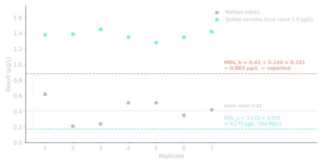

환경 분석 밖에서도 중요한 이유
EPA 절차는 미국 청정수법(Clean Water Act)에 따른 폐수 분석 규정입니다. 하지만 "반복 7회 × t값" 계산법은 그 범위를 훨씬 넘어 퍼졌고, 다른 분야의 많은 실험실이 지금도 이렇게 "MDL"을 계산합니다. 출처와, 이 값이 말해 주는 것과 말해 주지 않는 것을 알면 남의 MDL을 읽을 때 도움이 됩니다.
기원: 1981년 논문
EPA MDL은 EPA 연구진의 논문에서 나왔습니다.
J. A. Glaser, D. L. Foerst, G. D. McKee, S. A. Quave, W. L. Budde, "Trace analyses for wastewaters", Environmental Science & Technology, 1981, 15, 1426–1435.
이 절차는 이후 미국 규정 40 CFR Part 136 Appendix B가 되어 1984년 연방관보에 게재되었습니다(49 FR 43430). 2017년 규칙은 이 원래 절차를 1983년에 공포되어 그 뒤 개정되지 않았다고 설명합니다. 두 연도 모두 같은 절차를 가리킵니다.
원래의 MDL (Revision 1.11)
- 정의: 실제 농도가 0보다 크다고 99% 신뢰로 보고할 수 있는 최소 농도.
- 스파이크 시료 최소 7회 반복.
- MDL = t(n−1, 0.99) × s, s는 반복 측정의 표준편차. 7회면 t = 3.143.
Currie와 비교
두 정의를 나란히 놓으면(1편 참고):
- 원래 EPA MDL은 위양성만 관리합니다(단측 99%). Currie의 용어로는 LC 같은 판정 기준입니다.
- 위음성은 관리하지 않습니다. 실제로 MDL에 있는 시료는 절반 정도 놓칩니다.
- 블랭크가 아니라 스파이크 반복 시료로 만듭니다.
실무에서 생긴 문제
EPA와 주(州) 실험실 인증 기관이 꼽는 약점들입니다.
- "0"은 실제로 잴 수 없고, 분석 대상이 블랭크에서 자주 나옵니다. 옛 MDL은 블랭크를 무시했습니다.
- 최선의 숫자. 반복 측정을 하루에, 흔히 장비 정비 직후에 다 할 수 있었습니다.
- 장비 하나로 전부. 가장 감도 좋은 장비로 MDL을 구해 다른 장비에도 적용하곤 했습니다.
- 이제는 오염이 지배. 장비 감도가 좋아지면서 실험실·소모품·기구에서 오는 백그라운드가 장비 잡음보다 중요해졌습니다.
- 실제 시료에서는 MDL 수준을 잴 수 없는 경우가 많았습니다.
개정까지: 수은 분석법 사건
약점은 학술적인 이야기로 끝나지 않고 법적 분쟁으로 번졌습니다.
| 날짜 | 사건 |
|---|---|
| 1999-06-08 | EPA가 물 속 극미량 수은 분석법 Method 1631 Revision B 공포(64 FR 30417) |
| 1999 | 업계 단체가 규칙에 이의 제기: Alliance of Automobile Manufacturers et al. v. EPA, No. 99-1420 (D.C. Cir.) |
| 2000-10-19 | 합의. 여러 조건 중 하나로 EPA가 검출·정량 한계 절차를 평가하고 대안을 검토하기로 함 |
| 2003-03-12 | EPA가 평가 결과를 내고, 개정 MDL 절차와 새 정량 수준(ML)을 제안 |
| 2004-11-08 | EPA가 제안을 철회. 의견 대부분이 반대. 이해관계자와 논의하는 동안 기존 MDL 유지 |
| 2017-08-28 | Revision 2 확정(아래) |
즉 Revision 2는 합의의 직접 결과가 아닙니다. 합의로 재검토가 시작됐고, 첫 제안은 실패했으며, 최종안은 그 뒤의 이해관계자 논의에서 나왔습니다.
Revision 2 (2017)
The NELAC Institute가 제안한 개정안이 Clean Water Act Methods Update Rule(연방관보 2017년 8월 28일, 2017년 9월 27일 시행)으로 확정되었습니다.
| Revision 1.11 | Revision 2 | |
|---|---|---|
| 정의 | 결과가 0보다 크다고 99% 신뢰 | 방법 블랭크와 구별된다고 99% 신뢰로 보고할 수 있는 최저 측정값 |
| 스파이크 시료 | 최소 7개 | 최소 7개, 서로 다른 3일에 최소 3배치 |
| 방법 블랭크 | 사용 안 함 | 최소 7개, 블랭크 기반 MDL(MDLb) 산출 |
| 보고 MDL | 스파이크의 t × s | MDLs(스파이크)와 MDLb(블랭크) 중 큰 값 |
| 장비 여러 대 | 규정 없음 | 장비별로 스파이크·블랭크 최소 2개씩, 데이터를 합쳐 계산 |
| 지속 확인 | 요구 없음 | 분기마다 스파이크, 최소 13개월마다 재계산 |
| 이상값 제거 | 규정 없음 | 통계적 이상값 제거 불가, 기록된 명백한 실패만 제외 |
블랭크 기반 MDL
- 블랭크가 하나도 수치 결과를 내지 않으면 MDLb는 적용하지 않습니다.
- 일부 블랭크만 수치 결과를 내면, MDLb는 가장 높은 블랭크 결과입니다(블랭크 100개 이상이면 99번째 백분위수).
- 모든 블랭크가 수치 결과를 내면, MDLb = 블랭크 평균 + t(n−1, 0.99) × 블랭크 표준편차(평균이 음수면 0으로 봄).
바뀌지 않은 것
스파이크 시료로 계산하는 방식은 같습니다. 바뀐 것은 MDL이 하루 좋은 날이 아니라 실제 블랭크와 실제 일간 변동을 견뎌야 한다는 점입니다.
계산을 그림 한 장으로

예시 데이터: 스파이크 시료 7개(참값 1.0 µg/L)와 방법 블랭크 7개, 단위 µg/L. 짧은 설명을 위해 7회 반복으로 보였지만, 실제 Revision 2 연구는 최소 3일에 나눠 측정합니다.
| 반복 | 1 | 2 | 3 | 4 | 5 | 6 | 7 |
|---|---|---|---|---|---|---|---|
| 스파이크 | 1.38 | 1.39 | 1.45 | 1.35 | 1.28 | 1.35 | 1.42 |
| 블랭크 | 0.62 | 0.21 | 0.24 | 0.51 | 0.51 | 0.35 | 0.42 |
1단계, 스파이크로(청록): 스파이크는 촘촘합니다, s = 0.055. MDLs = 3.143 × 0.055 = 0.173 µg/L. 옛 절차라면 이것이 MDL입니다.
2단계, 블랭크로(빨강): 모든 블랭크가 수치를 내고, 평균 0.41, s = 0.151. MDLb = 0.41 + 3.143 × 0.151 = 0.883 µg/L.
3단계, 큰 값 보고: MDL = 0.883 µg/L, 옛 값의 약 5배.
그림이 보여주는 것: 스파이크만 보면 0.17 µg/L까지 볼 수 있는 분석법 같습니다. 하지만 블랭크가 늘 0.2~0.6 µg/L로 나오므로, 0.3 µg/L인 시료 결과는 블랭크일 뿐일 수 있습니다. 옛 MDL은 이를 감추고, 블랭크 기반 MDL은 드러냅니다.
여기서 스파이크 회수율은 약 137%로, 블랭크가 모든 결과에 더해지고 있다는 또 다른 신호입니다.
그림을 직접 만들려면: python make_figure.py (numpy, matplotlib 필요).
실무 정리
- 어느 개정판인지 물어보세요. 옛 하루짜리 절차의 MDL은 Revision 2보다 낮게 나오기 쉽습니다.
- 극미량에서는 블랭크가 한계를 정합니다. Revision 2의 핵심 교훈이며, 반도체 케미컬의 ppt 수준 분석에도 그대로 적용됩니다.
- EPA MDL은 여전히 판정 기준입니다. 놓친 검출까지 관리하는 한계나 정량에는 Currie의 LD와 LQ를 보세요.
이 글을 만든 방법
AI 도우미(Claude)로 자료를 찾은 뒤, 규정 원문(미국 연방규정집, 연방관보)과 EPA 페이지를 읽고 사실을 하나씩 대조했습니다. 그 결과 공식 출처가 원래 절차의 연도를 두 가지(1983, 1984)로 적고 있음을 확인해, 하나를 고르지 않고 둘 다 적었습니다. 또 2017년 개정이 2000년 수은 분석법 합의에서 바로 나온 것이 아니라, 2003년 첫 제안이 2004년에 철회되었음도 확인했습니다.
예시 데이터는 제가 예전에 만든 교육 자료에서 가져왔고, MDL 값은 코드로 다시 계산해 일치함을 확인했습니다.
참고문헌
- J. A. Glaser, D. L. Foerst, G. D. McKee, S. A. Quave, W. L. Budde, "Trace analyses for wastewaters", Environ. Sci. Technol., 1981, 15, 1426–1435. Cited in USGS OFR 99-193 references.
- US EPA, Definition and Procedure for the Determination of the Method Detection Limit, 40 CFR 136 App. B, 49 FR 43430 (1984). Original wording preserved in 40 CFR 425 App. C.
- US EPA, 40 CFR 136 Appendix B — Revision 2, 82 FR 40939 (28 Aug 2017).
- Federal Register, Clean Water Act Methods Update Rule, 28 Aug 2017.
- US EPA, Method Detection Limit — Frequent Questions.
- Wisconsin DNR, EPA MDL Overview (2018).
- Federal Register, Method 1631 field-blank revision, 18 Jun 2001 (Method 1631B promulgation, settlement of 19 Oct 2000).
- Federal Register, Withdrawal of proposed detection and quantitation revisions, 8 Nov 2004.